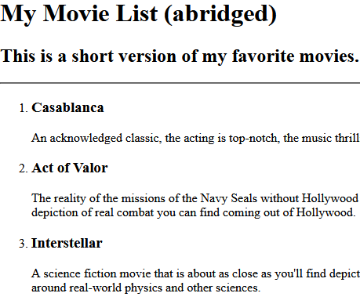

Among my varied interests are Bicycling, Photography, Science, Computers, 3D Printing, Martial Arts, Eastern Philosophy and Military History.
When I said I am interested in Computers, I meant practically all aspects of computers. I have been "messing about" with them since the early 1980's. I play computer games, I build computers, I am studying a couple of different programming languages, and I am studying networking and computer security as well.
This project shows three of my favorite movies. As you can imagine, with the wide variety of interests that I have, I also have a wide variety of favorite movies.
This birthday invitation flyer uses my own birthdate and some suggestions for attendees as an example.